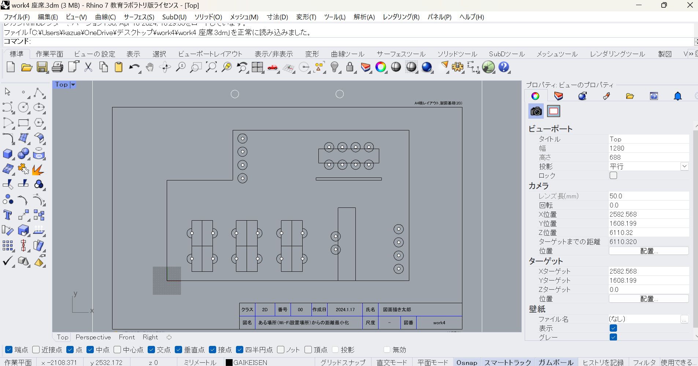
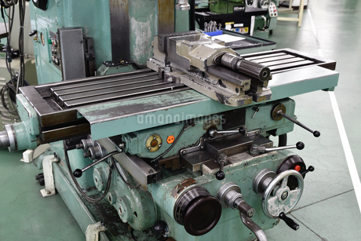

概要
大阪公立大学高等専門学校のエネルギー機械コースは、エネルギー技術と機械工学に焦点を当てたコースです。このコースでは、エネルギー変換、環境技術、機械設計など、持続可能な社会に貢献するための技術を学びます。
エネルギー機械コースの特徴
- 実践的教育：理論と実践のバランスを重視し、実験や実習を通じて実践的なスキルを習得します。
- 先進的技術の習得：最新のエネルギー技術と機械工学に関する知識を学び、将来の技術者としての基礎を築きます。
- 産学連携：地元企業との連携により、現場で求められる技術や知識を学ぶ機会が豊富です。
カリキュラム
1年次〜2年次
- 工業数学：工学に必要な数学の基礎を学びます。
- 物理学：力学、熱力学、波動など、物理の基本原理を学習。
- 化学：材料の特性を理解するための化学知識を習得。
3年次〜5年次
- 材料力学：構造物や機械の強度と変形について学ぶ。
- 流体力学：流体の性質や挙動を理解し、応用する技術を学ぶ。
- 熱工学：熱エネルギーの変換と利用に関する原理と応用。
- エネルギー変換工学：エネルギー変換の基礎と応用について学ぶ。
- 環境技術：環境に優しい技術や持続可能なエネルギー利用について学習。
設計・製図
機械設計：機械の設計プロセスと方法論。
CAD（コンピュータ支援設計）：コンピュータを使った設計技術の習得。
このCADソフトを使っています。詳しくは こちら。
実験・実習
機械加工実習：旋盤やフライス盤などの加工機械を使った実習。
エネルギーシステム実験：各種エネルギーシステムの特性を実験を通じて理解する。
設計プロジェクト：実際の課題に取り組むプロジェクト形式の授業。